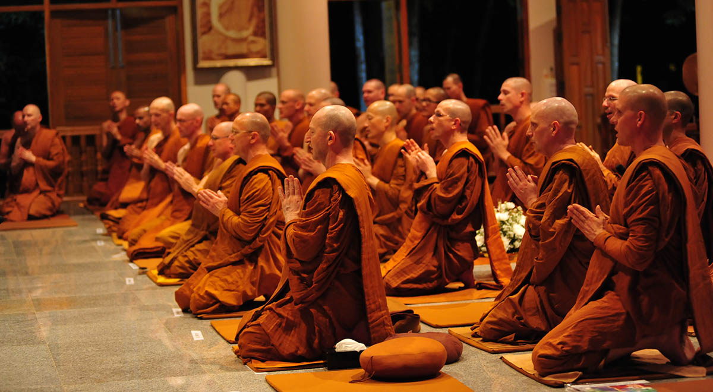

India's heritage and culture are so much more than just monuments and sites; it is reflected in everything from oral traditions, performing arts, social practices and festive events. According to UNESCO, intangible heritage represents inherited traditions from the past but also contemporary rural and urban practices that are inclusive, representative and community-based. On this World Heritage Day, here is a glimpse of India’s intangible heritage.
RAM LILA
Ramlila is any dramatic folk re-enactment of the life of Rama according to the ancient Hindu epic Ramayana or secondary literature based on it such as the Ramcharitmanas.[1] It particularly refers to the thousands[2] of the Hindu god Rama-related dramatic plays and dance events, that are staged during the annual autumn festival of Navaratri in India.[3] After the enactment of the legendary war between good and evil, the Ramlila celebrations climax in the Vijayadashami (Dussehra) night festivities where the giant grotesque effigies of evil such as of the rakshasa (demon) Ravana are burnt, typically with fireworks.
YOGA
Focused on bringing harmony between the mind, body and soul, yoga is an ancient Indian practice rooted in the Vedas. Akin to Maslow’s hierarchy of needs, yoga’s goal is to achieve self-actualisation and realisation, also known as “moksha,” or “nirvana.” Yoga is a culmination of movement, meditation, word chanting and breathing techniques that promote physical and mental well-being. According to various studies and surveys, yoga has various physical and mental benefits including supporting heart health, reducing stress and anxiety, improving sleep, building flexibility and enhancing the overall quality of life. Dubbed as “India’s gift to the world”, Yoga has become a popular practice around the world.
VEDIC CHANTING
One of the world’s oldest surviving cultural traditions, the Vedas represent a vast and awe-inspiring collection of Sanskrit poetry, philosophical discourse, mythological tales, and ritualistic incantations. Dating back over 3,500 years, this remarkable corpus of work is considered by Hindus to be the fundamental source of knowledge and the sacred bedrock upon which their religion is built. It is a priceless treasure trove that offers profound insights into the history of Hinduism and the origins of many of the artistic, scientific, and philosophical concepts that are still studied and celebrated today. Comprising four Vedas, each commonly referred to as a "book of knowledge," this heritage exists in an oral form, having been passed down from generation to generation. Through a system of complex recitation techniques that incorporate tonal accents, specific speech combinations, and a unique manner of pronouncing each letter, practitioners of the Vedic tradition are taught from childhood to preserve the sound of each word exactly as it has been passed down through the centuries.
KUTIYATTAM
Kutiyattam, an exceptional form of Sanskrit theatre, is a venerable living tradition in Kerala that has been in existence for over two millennia. This exquisite theatrical art embodies a harmonious blend of Sanskrit classicism and the indigenous customs of Kerala. What sets it apart is its intricate portrayal of situations and events in their fullest detail. This means that a single act could take several days to unfold, while a complete performance could span up to forty days. Kutiyattam's stylised and systematised language of expression employs two prominent features - neta abhinaya or eye expressions, and hasta abhinaya or hand gestures. Actors undergo a meticulous training process spanning a decade or more to acquire the skills of a seasoned performer. Traditionally, this form of theatre is staged in Kuttampalams, theatres located within Hindu temples. Initially, the plays were considered sacred, and access to them was restricted but with time, these performances have opened to larger audiences.
KUMBH MELA
The Kumbh Mela is a grand spectacle and is dubbed the largest human gathering in the world. This unique festival involves taking a dip or bathing in a holy river, as devotees believe that it will absolve them of their sins and grant them liberation from the cycle of birth and death. No words do justice to the magnitude of the event, as it draws millions of people and is held every four years by rotation in Allahabad, Haridwar, Ujjain and Nasik. It is a festival rich in cultural diversity as it involves various social and cultural activities that vary depending on the location.
RAMMAN
In late April every year, the twin hamlets of Saloor-Dungra in Uttarakhand come alive with the celebration of Ramman, a religious festival dedicated to Bhumiyal Devta, the revered patron deity of the region. This multi-dimensional cultural event combines elements of theatre, music, historical reconstruction, and traditional oral and written narratives, giving expression to the environmental, spiritual, and cultural ethos of the community. The festival is a rich tapestry of highly intricate rituals, including the recitation of an epic poem about Rama, various legends, and the enthralling spectacle of songs and masked dances. The entire extravaganza takes place in the temple dedicated to Bhumiyal Devta, where most of the festivities are centred.
MUDIYETTU
Based on a battle between Ma Kali—the Hindu goddess of power, time, destruction and change, and the ferocious demon—Darika, Mudiyettu is an enthralling dance and drama that takes place in Kerala. This community ritual sees the whole village come together in a stunning display of collective participation and mutual cooperation. The performance is traditionally staged after the summer harvest, wherein performers star in a captivating enactment. The story begins with the divine sage Narada imploring Lord Shiva to subdue the demon Darika, who is immune to defeat by mere mortals. Shiva, in his infinite wisdom, decrees that Darika shall meet his end at the hand of the powerful goddess Kali. The Mudiyettu is a highly anticipated annual event held at the Bhagavati Kavus–the temples of the goddess situated in various villages along the rivers Chalakkudy Puzha, Periyar and Moovattupuzha. The ritual dance drama promotes a strong sense of common identity and fosters mutual bonding among the community. It is truly a magnificent spectacle that showcases the rich cultural heritage of Kerala.
KALBELIA DANCE
A tribute to their erstwhile profession as snake handlers, the Kalbelia community indulges in a euphony of folk songs and dances. The women are dressed in traditional attire featuring flowing black skirts and traditional jewellery embellished with mirrors and silver thread, resplendent with intricate embroidery. The dance is a visual spectacle, with the dancers imitating the movements of serpents, while the men provide accompaniment on the khanjari percussion and the poongi, an instrument used to capture snakes in the past. These artistic forms have undergone an evolution, resulting in a beautiful blend of traditional and contemporary elements. The Kalbelia songs and dances are an integral part of the community’s cultural identity, and are performed with special enthusiasm during Holi.
DURGA PUJA

Durga Puja is a Hindu festival, celebrated annually in September or October, primarily in Kolkata, West Bengal, India, but also in other parts of the country and amongst the Bengali diaspora. The festival is characterised by elaborate installations, accompanied by traditional Bengali drumming and the veneration of the goddess. During this festival, the boundaries of class, religion, and ethnicity collapse as people from diverse backgrounds gather to admire the beautiful installations. It is a 10-day-long festival, dedicated to the worship of the mother goddess Durga and the festivities commence on the auspicious day of Mahalaya. The worship of Durga continues for 10 days, culminating on the day of Vijayadashami, when the clay images are immersed in the river, symbolising a "homecoming" or a seasonal return to one's roots. In essence, it is a magnificent celebration of the divine feminine, bringing together art, spirituality, and community in a dazzling display of human creativity and devotion.
CHHAU DANCE
The mesmerising art form of Chhau dance hails from the eastern part of India and intricately weaves together episodes from legendary tales like the Mahabharata and Ramayana, along with local folklore and abstract themes. Its distinct styles, originating from the regions of Seraikella, Purulia, and Mayurbhanj, captivate audiences with their vibrant energy and intricate movements, with the first two styles incorporating the use of masks. This traditional dance form is deeply intertwined with regional festivals, particularly the spring festival Chaitra Parva, and is believed to have evolved from indigenous dance and martial practices. Performed at night in open spaces, the dance is accompanied by traditional and folk melodies played on reed pipes like mohuri and shehnai, while the powerful beats of various drums fill the air, creating a riveting musical ensemble. Chhau is not merely a dance form but an integral part of the cultural fabric of the communities of Odisha, Jharkhand and West Bengal, uniting people from diverse social backgrounds, professions, beliefs, and languages.
BUDHHIST CHANTING

Immerse yourself in the mystical and spiritual world of Ladakh, where Buddhist priests chant sacred texts that embody the essence, philosophy, and teachings of the Buddha. In this picturesque region, two forms of Buddhism are practised—the Mahayana and Vajrayana, with four major sects: Nyingma, Kagyud, Shakya, and Geluk. Each sect has its unique forms of chanting, performed during significant life-cycle rituals and on special days of the Buddhist and agrarian calendars. Chanting in Ladakh is an act of spiritual and moral purification, aimed at restoring inner peace and invoking the blessings of various Buddhas, Bodhisattvas, and Rinpoches. Performed in groups, the chanting takes place in monastery courtyards, private houses or indoors, with the monks donning special costumes and making divine hand gestures (mudras) that represent the Buddha. The melodious rhythm of chanting is enhanced by the use of bells, drums, cymbals, and trumpets. This tranquil experience is soul nourishing and one of a kind.
SANKIRTANA , MANIPUR
Sankirtana, an assortment of artistic dance expressions, holds a significant place in the cultural tapestry of the Vaishnava populace inhabiting the scenic plains of Manipur. It is an elaborate ceremonial practice where performers, through melodious song and graceful dance, recount the life and exploits of Lord Krishna. The splendour of a typical performance is truly awe-inspiring, with a retinue of ten singer-dancers and two drummers performing in a hall or domestic courtyard, surrounded by seated devotees. The sublime elegance and spiritual potency of this art form leave audiences enraptured, often moved to tears, and reverently prostrating themselves before the performers. The Sankirtana tradition of Manipur is a vibrant and dynamic practice, promoting a harmonious relationship with people and nature alike. Its rituals work in tandem with the natural world, paying homage to its timeless rhythms and cycles. Indeed, the captivating allure of Sankirtana lies in its ability to infuse the mundane with the transcendent, elevate the human spirit and reveal the divine beauty inherent in all creation.
THATHERAS OF JANDIALA GURU

The Thatheras are a community of craftsmen based in Jandiala Guru, a town in Amritsar, Punjab. They have honed the traditional technique of crafting exquisite brass and copper utensils that are not only aesthetically pleasing but are believed to possess health benefits as well. This distinguished art form commences with procuring cooled metal cakes that are flattened into thin plates, and hammered into a plethora of curved shapes and sizes, ranging from small bowls and rimmed plates, to larger pots and other remarkable artefacts. This delicate process necessitates scrupulous temperature control, which is achieved by utilising minuscule wood-fired stoves, aided by handheld bellows, strategically buried in the earth. The meticulous process of crafting these utensils concludes with a laborious manual polishing procedure, incorporating traditional materials such as sand and tamarind juice. Intricate designs are skillfully created by hammering a series of minute dents into the heated metal, resulting in captivating patterns.
NAVROZ
The dawn of a new year is a momentous occasion celebrated with great fervour and excitement in several countries across Asia. In particular, March 21 marks the beginning of a fresh start for people from the Parsi community in Iran, India, Pakistan, Turkey, amongst others. This vibrant festival spans over two weeks and encompasses a host of intriguing rituals, ceremonies, and cultural events that are truly a sight to behold. A key tradition that stands out during this time is the gathering around the dining table, which is adorned with symbolic items representing purity, brightness, livelihood, and wealth. It is a joyous occasion for families and friends to come together and indulge in a sumptuous feast. People from the community don new attire and embark on visits to their loved ones, especially the elderly and neighbours, spreading warmth and joy. The exchanging of gifts, particularly for the young ones, is a treasured aspect of this festival and typically comprises handmade artisanal objects.